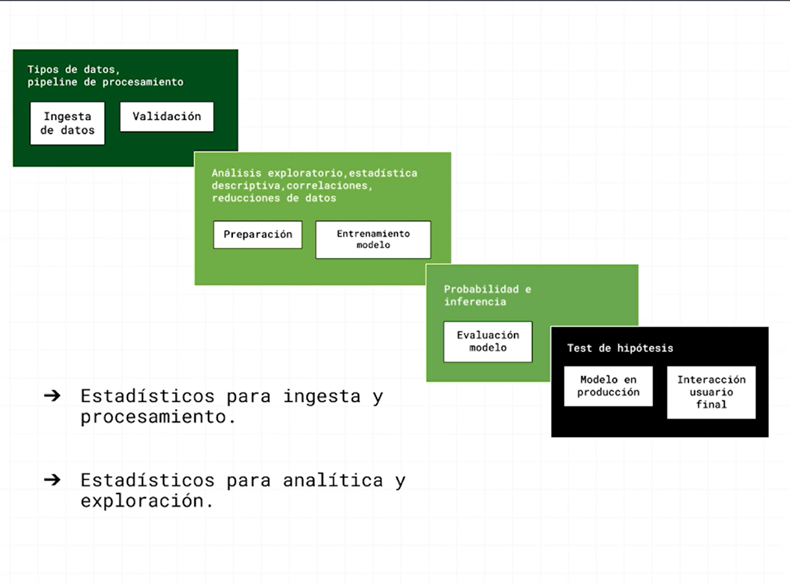
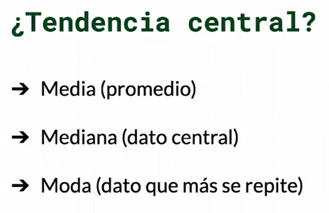
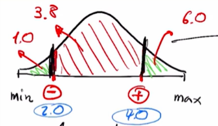
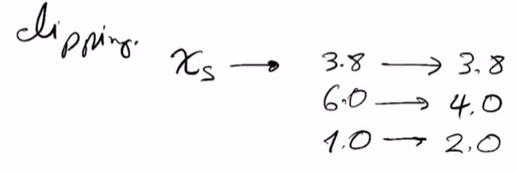
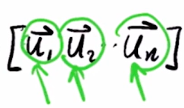

Intro to Statistics for Data Science#

Descriptive statistics#
Data types#
The data is categorized in two main groups
categoricaldata:ordinalsandnominalsnumericaldata:discreteandcontinuous
the following dataset contains all the data types
import pandas as pd
df = pd.read_csv("cars.csv")
df
| manufacturer_name | model_name | transmission | color | odometer_value | year_produced | engine_fuel | engine_has_gas | engine_type | engine_capacity | ... | feature_1 | feature_2 | feature_3 | feature_4 | feature_5 | feature_6 | feature_7 | feature_8 | feature_9 | duration_listed | |
|---|---|---|---|---|---|---|---|---|---|---|---|---|---|---|---|---|---|---|---|---|---|
| 0 | Subaru | Outback | automatic | silver | 190000 | 2010 | gasoline | False | gasoline | 2.5 | ... | True | True | True | False | True | False | True | True | True | 16 |
| 1 | Subaru | Outback | automatic | blue | 290000 | 2002 | gasoline | False | gasoline | 3.0 | ... | True | False | False | True | True | False | False | False | True | 83 |
| 2 | Subaru | Forester | automatic | red | 402000 | 2001 | gasoline | False | gasoline | 2.5 | ... | True | False | False | False | False | False | False | True | True | 151 |
| 3 | Subaru | Impreza | mechanical | blue | 10000 | 1999 | gasoline | False | gasoline | 3.0 | ... | False | False | False | False | False | False | False | False | False | 86 |
| 4 | Subaru | Legacy | automatic | black | 280000 | 2001 | gasoline | False | gasoline | 2.5 | ... | True | False | True | True | False | False | False | False | True | 7 |
| ... | ... | ... | ... | ... | ... | ... | ... | ... | ... | ... | ... | ... | ... | ... | ... | ... | ... | ... | ... | ... | ... |
| 38526 | Chrysler | 300 | automatic | silver | 290000 | 2000 | gasoline | False | gasoline | 3.5 | ... | True | False | False | True | True | False | False | True | True | 301 |
| 38527 | Chrysler | PT Cruiser | mechanical | blue | 321000 | 2004 | diesel | False | diesel | 2.2 | ... | True | False | False | True | True | False | False | True | True | 317 |
| 38528 | Chrysler | 300 | automatic | blue | 777957 | 2000 | gasoline | False | gasoline | 3.5 | ... | True | False | False | True | True | False | False | True | True | 369 |
| 38529 | Chrysler | PT Cruiser | mechanical | black | 20000 | 2001 | gasoline | False | gasoline | 2.0 | ... | True | False | False | False | False | False | False | False | True | 490 |
| 38530 | Chrysler | Voyager | automatic | silver | 297729 | 2000 | gasoline | False | gasoline | 2.4 | ... | False | False | False | False | False | False | False | False | True | 632 |
38531 rows × 30 columns
data types in pandas#
we can get the data types of each column with df.dtypes
df.dtypes
manufacturer_name object
model_name object
transmission object
color object
odometer_value int64
year_produced int64
engine_fuel object
engine_has_gas bool
engine_type object
engine_capacity float64
body_type object
has_warranty bool
state object
drivetrain object
price_usd float64
is_exchangeable bool
location_region object
number_of_photos int64
up_counter int64
feature_0 bool
feature_1 bool
feature_2 bool
feature_3 bool
feature_4 bool
feature_5 bool
feature_6 bool
feature_7 bool
feature_8 bool
feature_9 bool
duration_listed int64
dtype: object
Here we will see the data types and they are identified in the following manner:
Categorical:
object,boolNumerical:
int64(discrete),float64(contínuous)
.describe()#
.describe() will show the main statistics for the datasets
df.describe()
| odometer_value | year_produced | engine_capacity | price_usd | number_of_photos | up_counter | duration_listed | |
|---|---|---|---|---|---|---|---|
| count | 38531.000000 | 38531.000000 | 38521.000000 | 38531.000000 | 38531.000000 | 38531.000000 | 38531.000000 |
| mean | 248864.638447 | 2002.943734 | 2.055161 | 6639.971021 | 9.649062 | 16.306091 | 80.577249 |
| std | 136072.376530 | 8.065731 | 0.671178 | 6428.152018 | 6.093217 | 43.286933 | 112.826569 |
| min | 0.000000 | 1942.000000 | 0.200000 | 1.000000 | 1.000000 | 1.000000 | 0.000000 |
| 25% | 158000.000000 | 1998.000000 | 1.600000 | 2100.000000 | 5.000000 | 2.000000 | 23.000000 |
| 50% | 250000.000000 | 2003.000000 | 2.000000 | 4800.000000 | 8.000000 | 5.000000 | 59.000000 |
| 75% | 325000.000000 | 2009.000000 | 2.300000 | 8990.000000 | 12.000000 | 16.000000 | 91.000000 |
| max | 1000000.000000 | 2019.000000 | 8.000000 | 50000.000000 | 86.000000 | 1861.000000 | 2232.000000 |
Measures of central tendency#

Mean#
df['price_usd'].mean()
6639.971021255613
Median#
df['price_usd'].median()
4800.0
Analyzing data distribution#
df["price_usd"].plot.hist(bins=20);
Here you can see data concentration
import seaborn as sns
sns.displot(data = df, x = "price_usd", hue = "manufacturer_name");
C:\Users\admin\miniconda3\Lib\site-packages\seaborn\_oldcore.py:1498: FutureWarning: is_categorical_dtype is deprecated and will be removed in a future version. Use isinstance(dtype, CategoricalDtype) instead
if pd.api.types.is_categorical_dtype(vector):
C:\Users\admin\miniconda3\Lib\site-packages\seaborn\_oldcore.py:1498: FutureWarning: is_categorical_dtype is deprecated and will be removed in a future version. Use isinstance(dtype, CategoricalDtype) instead
if pd.api.types.is_categorical_dtype(vector):
C:\Users\admin\miniconda3\Lib\site-packages\seaborn\_oldcore.py:1498: FutureWarning: is_categorical_dtype is deprecated and will be removed in a future version. Use isinstance(dtype, CategoricalDtype) instead
if pd.api.types.is_categorical_dtype(vector):
C:\Users\admin\miniconda3\Lib\site-packages\seaborn\_oldcore.py:1498: FutureWarning: is_categorical_dtype is deprecated and will be removed in a future version. Use isinstance(dtype, CategoricalDtype) instead
if pd.api.types.is_categorical_dtype(vector):
C:\Users\admin\miniconda3\Lib\site-packages\seaborn\_oldcore.py:1119: FutureWarning: use_inf_as_na option is deprecated and will be removed in a future version. Convert inf values to NaN before operating instead.
with pd.option_context('mode.use_inf_as_na', True):
C:\Users\admin\miniconda3\Lib\site-packages\seaborn\axisgrid.py:118: UserWarning: The figure layout has changed to tight
self._figure.tight_layout(*args, **kwargs)
Now, this chart is overloaded. You can’t clearly say the frequency of each brand. Let’s choose a column with less categories
sns.displot(data = df, x="price_usd", hue= "engine_type", multiple = "stack");
C:\Users\admin\miniconda3\Lib\site-packages\seaborn\_oldcore.py:1498: FutureWarning: is_categorical_dtype is deprecated and will be removed in a future version. Use isinstance(dtype, CategoricalDtype) instead
if pd.api.types.is_categorical_dtype(vector):
C:\Users\admin\miniconda3\Lib\site-packages\seaborn\_oldcore.py:1498: FutureWarning: is_categorical_dtype is deprecated and will be removed in a future version. Use isinstance(dtype, CategoricalDtype) instead
if pd.api.types.is_categorical_dtype(vector):
C:\Users\admin\miniconda3\Lib\site-packages\seaborn\_oldcore.py:1498: FutureWarning: is_categorical_dtype is deprecated and will be removed in a future version. Use isinstance(dtype, CategoricalDtype) instead
if pd.api.types.is_categorical_dtype(vector):
C:\Users\admin\miniconda3\Lib\site-packages\seaborn\_oldcore.py:1498: FutureWarning: is_categorical_dtype is deprecated and will be removed in a future version. Use isinstance(dtype, CategoricalDtype) instead
if pd.api.types.is_categorical_dtype(vector):
C:\Users\admin\miniconda3\Lib\site-packages\seaborn\_oldcore.py:1119: FutureWarning: use_inf_as_na option is deprecated and will be removed in a future version. Convert inf values to NaN before operating instead.
with pd.option_context('mode.use_inf_as_na', True):
C:\Users\admin\miniconda3\Lib\site-packages\seaborn\axisgrid.py:118: UserWarning: The figure layout has changed to tight
self._figure.tight_layout(*args, **kwargs)
What happened with electric cars? why aren’t those visible? let’s dig further
df.groupby("engine_type").count()
| manufacturer_name | model_name | transmission | color | odometer_value | year_produced | engine_fuel | engine_has_gas | engine_capacity | body_type | ... | feature_1 | feature_2 | feature_3 | feature_4 | feature_5 | feature_6 | feature_7 | feature_8 | feature_9 | duration_listed | |
|---|---|---|---|---|---|---|---|---|---|---|---|---|---|---|---|---|---|---|---|---|---|
| engine_type | |||||||||||||||||||||
| diesel | 12874 | 12874 | 12874 | 12874 | 12874 | 12874 | 12874 | 12874 | 12874 | 12874 | ... | 12874 | 12874 | 12874 | 12874 | 12874 | 12874 | 12874 | 12874 | 12874 | 12874 |
| electric | 10 | 10 | 10 | 10 | 10 | 10 | 10 | 10 | 0 | 10 | ... | 10 | 10 | 10 | 10 | 10 | 10 | 10 | 10 | 10 | 10 |
| gasoline | 25647 | 25647 | 25647 | 25647 | 25647 | 25647 | 25647 | 25647 | 25647 | 25647 | ... | 25647 | 25647 | 25647 | 25647 | 25647 | 25647 | 25647 | 25647 | 25647 | 25647 |
3 rows × 29 columns
Previous DF told us that there are just 10 electric cars, but it still is too hard to analyze, where are the electric cars?
Electric_Cars = df[(df["engine_type"]=="electric")]
Electric_Cars
| manufacturer_name | model_name | transmission | color | odometer_value | year_produced | engine_fuel | engine_has_gas | engine_type | engine_capacity | ... | feature_1 | feature_2 | feature_3 | feature_4 | feature_5 | feature_6 | feature_7 | feature_8 | feature_9 | duration_listed | |
|---|---|---|---|---|---|---|---|---|---|---|---|---|---|---|---|---|---|---|---|---|---|
| 8782 | Fiat | 500 | automatic | orange | 27000 | 2013 | electric | False | electric | NaN | ... | True | False | True | True | True | False | True | True | True | 77 |
| 9048 | Fiat | 500 | automatic | orange | 49000 | 2014 | electric | False | electric | NaN | ... | False | False | True | False | True | False | True | False | True | 11 |
| 24226 | Chevrolet | Volt | automatic | silver | 168000 | 2013 | electric | False | electric | NaN | ... | False | False | True | False | False | False | True | True | True | 6 |
| 25943 | Nissan | Leaf | automatic | white | 57357 | 2015 | electric | False | electric | NaN | ... | True | True | True | True | True | True | True | True | True | 75 |
| 26203 | Nissan | Leaf | automatic | blue | 97400 | 2011 | electric | False | electric | NaN | ... | True | False | False | False | False | False | True | False | True | 64 |
| 26222 | Nissan | Leaf | automatic | white | 50000 | 2014 | electric | False | electric | NaN | ... | True | False | False | False | True | False | True | True | False | 18 |
| 26582 | Nissan | Leaf | automatic | black | 84000 | 2014 | electric | False | electric | NaN | ... | False | False | False | False | True | True | True | True | True | 138 |
| 26914 | Nissan | Leaf | automatic | black | 84500 | 2013 | electric | False | electric | NaN | ... | True | False | True | False | True | True | True | True | True | 58 |
| 27554 | BMW | i3 | automatic | white | 54150 | 2015 | electric | False | electric | NaN | ... | True | True | True | False | True | True | True | True | True | 18 |
| 29590 | BMW | i3 | automatic | other | 67000 | 2018 | electric | False | electric | NaN | ... | True | True | True | True | True | True | True | True | True | 57 |
10 rows × 30 columns
Measures of dispersion#
import pandas as pd
import matplotlib.pyplot as plt
import seaborn as sns
df = pd.read_csv("cars.csv")
print(df.head(5))
manufacturer_name model_name transmission color odometer_value \
0 Subaru Outback automatic silver 190000
1 Subaru Outback automatic blue 290000
2 Subaru Forester automatic red 402000
3 Subaru Impreza mechanical blue 10000
4 Subaru Legacy automatic black 280000
year_produced engine_fuel engine_has_gas engine_type engine_capacity \
0 2010 gasoline False gasoline 2.5
1 2002 gasoline False gasoline 3.0
2 2001 gasoline False gasoline 2.5
3 1999 gasoline False gasoline 3.0
4 2001 gasoline False gasoline 2.5
... feature_1 feature_2 feature_3 feature_4 feature_5 feature_6 \
0 ... True True True False True False
1 ... True False False True True False
2 ... True False False False False False
3 ... False False False False False False
4 ... True False True True False False
feature_7 feature_8 feature_9 duration_listed
0 True True True 16
1 False False True 83
2 False True True 151
3 False False False 86
4 False False True 7
[5 rows x 30 columns]
Standard deviation#
let’s calculate the standart deviation of the column “price_usd”
df["price_usd"].std()
6428.1520182029035
Range - (min, max values)#
pricerange = df["price_usd"].max() - df["price_usd"].min()
print(pricerange)
49999.0
Quartiles#
median = df["price_usd"].median()
Q1 = df["price_usd"].quantile(q=0.25)
Q3 = df["price_usd"].quantile(q=0.75)
min_val = df['price_usd'].quantile(q=0)
max_val = df['price_usd'].quantile(q=1.0)
print("min val:", min_val, ", Quartile1:", Q1, ", Median:" ,median, ", Quartile3" ,Q3, ", max val" , max_val)
min val: 1.0 , Quartile1: 2100.0 , Median: 4800.0 , Quartile3 8990.0 , max val 50000.0
Outliers detection#
Data that is not between $\([Q_1 -1.5IQR\)\( , \)\(Q_3 + 1.5IQR]\)$ are considered outliers
iqr = Q3 - Q1
#left limit
minlimit = Q1 - 1.5*iqr
#right limit
maxlimit = Q3 + 1.5*iqr
print("range for outliers detection is:", minlimit, ",", maxlimit)
range for outliers detection is: -8235.0 , 19325.0
sns.set(rc={'figure.figsize':(11.7,8.27)})
f, (ax_hist, ax_box) = plt.subplots(2, sharex=True, gridspec_kw={"height_ratios": (.6, .4)})
sns.histplot(df['price_usd'], ax=ax_hist)
sns.boxplot(df['price_usd'], ax=ax_box)
ax_hist.set(xlabel='')
C:\Users\admin\miniconda3\Lib\site-packages\seaborn\_oldcore.py:1498: FutureWarning: is_categorical_dtype is deprecated and will be removed in a future version. Use isinstance(dtype, CategoricalDtype) instead
if pd.api.types.is_categorical_dtype(vector):
C:\Users\admin\miniconda3\Lib\site-packages\seaborn\_oldcore.py:1119: FutureWarning: use_inf_as_na option is deprecated and will be removed in a future version. Convert inf values to NaN before operating instead.
with pd.option_context('mode.use_inf_as_na', True):
[Text(0.5, 0, '')]
Scatterplots for data analysis#
import pandas as pd
import seaborn as sns
iris = sns.load_dataset("iris")
iris.head()
| sepal_length | sepal_width | petal_length | petal_width | species | |
|---|---|---|---|---|---|
| 0 | 5.1 | 3.5 | 1.4 | 0.2 | setosa |
| 1 | 4.9 | 3.0 | 1.4 | 0.2 | setosa |
| 2 | 4.7 | 3.2 | 1.3 | 0.2 | setosa |
| 3 | 4.6 | 3.1 | 1.5 | 0.2 | setosa |
| 4 | 5.0 | 3.6 | 1.4 | 0.2 | setosa |
Scatterplot segmented by categories#
sns.scatterplot(data=iris, x="sepal_length", y="petal_length", hue="species");
C:\Users\admin\miniconda3\Lib\site-packages\seaborn\_oldcore.py:1498: FutureWarning: is_categorical_dtype is deprecated and will be removed in a future version. Use isinstance(dtype, CategoricalDtype) instead
if pd.api.types.is_categorical_dtype(vector):
C:\Users\admin\miniconda3\Lib\site-packages\seaborn\_oldcore.py:1498: FutureWarning: is_categorical_dtype is deprecated and will be removed in a future version. Use isinstance(dtype, CategoricalDtype) instead
if pd.api.types.is_categorical_dtype(vector):
C:\Users\admin\miniconda3\Lib\site-packages\seaborn\_oldcore.py:1498: FutureWarning: is_categorical_dtype is deprecated and will be removed in a future version. Use isinstance(dtype, CategoricalDtype) instead
if pd.api.types.is_categorical_dtype(vector):
C:\Users\admin\miniconda3\Lib\site-packages\seaborn\_oldcore.py:1498: FutureWarning: is_categorical_dtype is deprecated and will be removed in a future version. Use isinstance(dtype, CategoricalDtype) instead
if pd.api.types.is_categorical_dtype(vector):
C:\Users\admin\miniconda3\Lib\site-packages\seaborn\_oldcore.py:1498: FutureWarning: is_categorical_dtype is deprecated and will be removed in a future version. Use isinstance(dtype, CategoricalDtype) instead
if pd.api.types.is_categorical_dtype(vector):
Jointplot#
sns.jointplot(data=iris, x="sepal_length", y="petal_length", hue="species")
C:\Users\admin\miniconda3\Lib\site-packages\seaborn\_oldcore.py:1498: FutureWarning: is_categorical_dtype is deprecated and will be removed in a future version. Use isinstance(dtype, CategoricalDtype) instead
if pd.api.types.is_categorical_dtype(vector):
C:\Users\admin\miniconda3\Lib\site-packages\seaborn\_oldcore.py:1498: FutureWarning: is_categorical_dtype is deprecated and will be removed in a future version. Use isinstance(dtype, CategoricalDtype) instead
if pd.api.types.is_categorical_dtype(vector):
C:\Users\admin\miniconda3\Lib\site-packages\seaborn\_oldcore.py:1498: FutureWarning: is_categorical_dtype is deprecated and will be removed in a future version. Use isinstance(dtype, CategoricalDtype) instead
if pd.api.types.is_categorical_dtype(vector):
C:\Users\admin\miniconda3\Lib\site-packages\seaborn\_oldcore.py:1498: FutureWarning: is_categorical_dtype is deprecated and will be removed in a future version. Use isinstance(dtype, CategoricalDtype) instead
if pd.api.types.is_categorical_dtype(vector):
C:\Users\admin\miniconda3\Lib\site-packages\seaborn\_oldcore.py:1498: FutureWarning: is_categorical_dtype is deprecated and will be removed in a future version. Use isinstance(dtype, CategoricalDtype) instead
if pd.api.types.is_categorical_dtype(vector):
C:\Users\admin\miniconda3\Lib\site-packages\seaborn\_oldcore.py:1498: FutureWarning: is_categorical_dtype is deprecated and will be removed in a future version. Use isinstance(dtype, CategoricalDtype) instead
if pd.api.types.is_categorical_dtype(vector):
C:\Users\admin\miniconda3\Lib\site-packages\seaborn\_oldcore.py:1498: FutureWarning: is_categorical_dtype is deprecated and will be removed in a future version. Use isinstance(dtype, CategoricalDtype) instead
if pd.api.types.is_categorical_dtype(vector):
C:\Users\admin\miniconda3\Lib\site-packages\seaborn\_oldcore.py:1498: FutureWarning: is_categorical_dtype is deprecated and will be removed in a future version. Use isinstance(dtype, CategoricalDtype) instead
if pd.api.types.is_categorical_dtype(vector):
C:\Users\admin\miniconda3\Lib\site-packages\seaborn\_oldcore.py:1498: FutureWarning: is_categorical_dtype is deprecated and will be removed in a future version. Use isinstance(dtype, CategoricalDtype) instead
if pd.api.types.is_categorical_dtype(vector):
C:\Users\admin\miniconda3\Lib\site-packages\seaborn\_oldcore.py:1498: FutureWarning: is_categorical_dtype is deprecated and will be removed in a future version. Use isinstance(dtype, CategoricalDtype) instead
if pd.api.types.is_categorical_dtype(vector):
C:\Users\admin\miniconda3\Lib\site-packages\seaborn\_oldcore.py:1498: FutureWarning: is_categorical_dtype is deprecated and will be removed in a future version. Use isinstance(dtype, CategoricalDtype) instead
if pd.api.types.is_categorical_dtype(vector):
C:\Users\admin\miniconda3\Lib\site-packages\seaborn\_oldcore.py:1498: FutureWarning: is_categorical_dtype is deprecated and will be removed in a future version. Use isinstance(dtype, CategoricalDtype) instead
if pd.api.types.is_categorical_dtype(vector):
C:\Users\admin\miniconda3\Lib\site-packages\seaborn\_oldcore.py:1498: FutureWarning: is_categorical_dtype is deprecated and will be removed in a future version. Use isinstance(dtype, CategoricalDtype) instead
if pd.api.types.is_categorical_dtype(vector):
C:\Users\admin\miniconda3\Lib\site-packages\seaborn\_oldcore.py:1119: FutureWarning: use_inf_as_na option is deprecated and will be removed in a future version. Convert inf values to NaN before operating instead.
with pd.option_context('mode.use_inf_as_na', True):
C:\Users\admin\miniconda3\Lib\site-packages\seaborn\_oldcore.py:1498: FutureWarning: is_categorical_dtype is deprecated and will be removed in a future version. Use isinstance(dtype, CategoricalDtype) instead
if pd.api.types.is_categorical_dtype(vector):
C:\Users\admin\miniconda3\Lib\site-packages\seaborn\_oldcore.py:1498: FutureWarning: is_categorical_dtype is deprecated and will be removed in a future version. Use isinstance(dtype, CategoricalDtype) instead
if pd.api.types.is_categorical_dtype(vector):
C:\Users\admin\miniconda3\Lib\site-packages\seaborn\_oldcore.py:1498: FutureWarning: is_categorical_dtype is deprecated and will be removed in a future version. Use isinstance(dtype, CategoricalDtype) instead
if pd.api.types.is_categorical_dtype(vector):
C:\Users\admin\miniconda3\Lib\site-packages\seaborn\_oldcore.py:1498: FutureWarning: is_categorical_dtype is deprecated and will be removed in a future version. Use isinstance(dtype, CategoricalDtype) instead
if pd.api.types.is_categorical_dtype(vector):
C:\Users\admin\miniconda3\Lib\site-packages\seaborn\_oldcore.py:1119: FutureWarning: use_inf_as_na option is deprecated and will be removed in a future version. Convert inf values to NaN before operating instead.
with pd.option_context('mode.use_inf_as_na', True):
<seaborn.axisgrid.JointGrid at 0x164db15e510>
lm plot per categories#
sns.lmplot(data=iris, x="sepal_length", y="petal_length", hue="species");
C:\Users\admin\miniconda3\Lib\site-packages\seaborn\_oldcore.py:1498: FutureWarning: is_categorical_dtype is deprecated and will be removed in a future version. Use isinstance(dtype, CategoricalDtype) instead
if pd.api.types.is_categorical_dtype(vector):
C:\Users\admin\miniconda3\Lib\site-packages\seaborn\_oldcore.py:1498: FutureWarning: is_categorical_dtype is deprecated and will be removed in a future version. Use isinstance(dtype, CategoricalDtype) instead
if pd.api.types.is_categorical_dtype(vector):
C:\Users\admin\miniconda3\Lib\site-packages\seaborn\axisgrid.py:118: UserWarning: The figure layout has changed to tight
self._figure.tight_layout(*args, **kwargs)
sns.pairplot(data=iris, hue="species", palette="inferno", diag_kind="kde");
C:\Users\admin\miniconda3\Lib\site-packages\seaborn\_oldcore.py:1498: FutureWarning: is_categorical_dtype is deprecated and will be removed in a future version. Use isinstance(dtype, CategoricalDtype) instead
if pd.api.types.is_categorical_dtype(vector):
C:\Users\admin\miniconda3\Lib\site-packages\seaborn\_oldcore.py:1498: FutureWarning: is_categorical_dtype is deprecated and will be removed in a future version. Use isinstance(dtype, CategoricalDtype) instead
if pd.api.types.is_categorical_dtype(vector):
C:\Users\admin\miniconda3\Lib\site-packages\seaborn\_oldcore.py:1498: FutureWarning: is_categorical_dtype is deprecated and will be removed in a future version. Use isinstance(dtype, CategoricalDtype) instead
if pd.api.types.is_categorical_dtype(vector):
C:\Users\admin\miniconda3\Lib\site-packages\seaborn\_oldcore.py:1498: FutureWarning: is_categorical_dtype is deprecated and will be removed in a future version. Use isinstance(dtype, CategoricalDtype) instead
if pd.api.types.is_categorical_dtype(vector):
C:\Users\admin\miniconda3\Lib\site-packages\seaborn\_oldcore.py:1498: FutureWarning: is_categorical_dtype is deprecated and will be removed in a future version. Use isinstance(dtype, CategoricalDtype) instead
if pd.api.types.is_categorical_dtype(vector):
C:\Users\admin\miniconda3\Lib\site-packages\seaborn\_oldcore.py:1498: FutureWarning: is_categorical_dtype is deprecated and will be removed in a future version. Use isinstance(dtype, CategoricalDtype) instead
if pd.api.types.is_categorical_dtype(vector):
C:\Users\admin\miniconda3\Lib\site-packages\seaborn\_oldcore.py:1498: FutureWarning: is_categorical_dtype is deprecated and will be removed in a future version. Use isinstance(dtype, CategoricalDtype) instead
if pd.api.types.is_categorical_dtype(vector):
C:\Users\admin\miniconda3\Lib\site-packages\seaborn\_oldcore.py:1498: FutureWarning: is_categorical_dtype is deprecated and will be removed in a future version. Use isinstance(dtype, CategoricalDtype) instead
if pd.api.types.is_categorical_dtype(vector):
C:\Users\admin\miniconda3\Lib\site-packages\seaborn\_oldcore.py:1498: FutureWarning: is_categorical_dtype is deprecated and will be removed in a future version. Use isinstance(dtype, CategoricalDtype) instead
if pd.api.types.is_categorical_dtype(vector):
C:\Users\admin\miniconda3\Lib\site-packages\seaborn\_oldcore.py:1119: FutureWarning: use_inf_as_na option is deprecated and will be removed in a future version. Convert inf values to NaN before operating instead.
with pd.option_context('mode.use_inf_as_na', True):
C:\Users\admin\miniconda3\Lib\site-packages\seaborn\_oldcore.py:1498: FutureWarning: is_categorical_dtype is deprecated and will be removed in a future version. Use isinstance(dtype, CategoricalDtype) instead
if pd.api.types.is_categorical_dtype(vector):
C:\Users\admin\miniconda3\Lib\site-packages\seaborn\_oldcore.py:1498: FutureWarning: is_categorical_dtype is deprecated and will be removed in a future version. Use isinstance(dtype, CategoricalDtype) instead
if pd.api.types.is_categorical_dtype(vector):
C:\Users\admin\miniconda3\Lib\site-packages\seaborn\_oldcore.py:1498: FutureWarning: is_categorical_dtype is deprecated and will be removed in a future version. Use isinstance(dtype, CategoricalDtype) instead
if pd.api.types.is_categorical_dtype(vector):
C:\Users\admin\miniconda3\Lib\site-packages\seaborn\_oldcore.py:1119: FutureWarning: use_inf_as_na option is deprecated and will be removed in a future version. Convert inf values to NaN before operating instead.
with pd.option_context('mode.use_inf_as_na', True):
C:\Users\admin\miniconda3\Lib\site-packages\seaborn\_oldcore.py:1498: FutureWarning: is_categorical_dtype is deprecated and will be removed in a future version. Use isinstance(dtype, CategoricalDtype) instead
if pd.api.types.is_categorical_dtype(vector):
C:\Users\admin\miniconda3\Lib\site-packages\seaborn\_oldcore.py:1498: FutureWarning: is_categorical_dtype is deprecated and will be removed in a future version. Use isinstance(dtype, CategoricalDtype) instead
if pd.api.types.is_categorical_dtype(vector):
C:\Users\admin\miniconda3\Lib\site-packages\seaborn\_oldcore.py:1498: FutureWarning: is_categorical_dtype is deprecated and will be removed in a future version. Use isinstance(dtype, CategoricalDtype) instead
if pd.api.types.is_categorical_dtype(vector):
C:\Users\admin\miniconda3\Lib\site-packages\seaborn\_oldcore.py:1119: FutureWarning: use_inf_as_na option is deprecated and will be removed in a future version. Convert inf values to NaN before operating instead.
with pd.option_context('mode.use_inf_as_na', True):
C:\Users\admin\miniconda3\Lib\site-packages\seaborn\_oldcore.py:1498: FutureWarning: is_categorical_dtype is deprecated and will be removed in a future version. Use isinstance(dtype, CategoricalDtype) instead
if pd.api.types.is_categorical_dtype(vector):
C:\Users\admin\miniconda3\Lib\site-packages\seaborn\_oldcore.py:1498: FutureWarning: is_categorical_dtype is deprecated and will be removed in a future version. Use isinstance(dtype, CategoricalDtype) instead
if pd.api.types.is_categorical_dtype(vector):
C:\Users\admin\miniconda3\Lib\site-packages\seaborn\_oldcore.py:1498: FutureWarning: is_categorical_dtype is deprecated and will be removed in a future version. Use isinstance(dtype, CategoricalDtype) instead
if pd.api.types.is_categorical_dtype(vector):
C:\Users\admin\miniconda3\Lib\site-packages\seaborn\_oldcore.py:1119: FutureWarning: use_inf_as_na option is deprecated and will be removed in a future version. Convert inf values to NaN before operating instead.
with pd.option_context('mode.use_inf_as_na', True):
C:\Users\admin\miniconda3\Lib\site-packages\seaborn\_oldcore.py:1498: FutureWarning: is_categorical_dtype is deprecated and will be removed in a future version. Use isinstance(dtype, CategoricalDtype) instead
if pd.api.types.is_categorical_dtype(vector):
C:\Users\admin\miniconda3\Lib\site-packages\seaborn\_oldcore.py:1498: FutureWarning: is_categorical_dtype is deprecated and will be removed in a future version. Use isinstance(dtype, CategoricalDtype) instead
if pd.api.types.is_categorical_dtype(vector):
C:\Users\admin\miniconda3\Lib\site-packages\seaborn\_oldcore.py:1498: FutureWarning: is_categorical_dtype is deprecated and will be removed in a future version. Use isinstance(dtype, CategoricalDtype) instead
if pd.api.types.is_categorical_dtype(vector):
C:\Users\admin\miniconda3\Lib\site-packages\seaborn\_oldcore.py:1498: FutureWarning: is_categorical_dtype is deprecated and will be removed in a future version. Use isinstance(dtype, CategoricalDtype) instead
if pd.api.types.is_categorical_dtype(vector):
C:\Users\admin\miniconda3\Lib\site-packages\seaborn\_oldcore.py:1498: FutureWarning: is_categorical_dtype is deprecated and will be removed in a future version. Use isinstance(dtype, CategoricalDtype) instead
if pd.api.types.is_categorical_dtype(vector):
C:\Users\admin\miniconda3\Lib\site-packages\seaborn\_oldcore.py:1498: FutureWarning: is_categorical_dtype is deprecated and will be removed in a future version. Use isinstance(dtype, CategoricalDtype) instead
if pd.api.types.is_categorical_dtype(vector):
C:\Users\admin\miniconda3\Lib\site-packages\seaborn\_oldcore.py:1498: FutureWarning: is_categorical_dtype is deprecated and will be removed in a future version. Use isinstance(dtype, CategoricalDtype) instead
if pd.api.types.is_categorical_dtype(vector):
C:\Users\admin\miniconda3\Lib\site-packages\seaborn\_oldcore.py:1498: FutureWarning: is_categorical_dtype is deprecated and will be removed in a future version. Use isinstance(dtype, CategoricalDtype) instead
if pd.api.types.is_categorical_dtype(vector):
C:\Users\admin\miniconda3\Lib\site-packages\seaborn\_oldcore.py:1498: FutureWarning: is_categorical_dtype is deprecated and will be removed in a future version. Use isinstance(dtype, CategoricalDtype) instead
if pd.api.types.is_categorical_dtype(vector):
C:\Users\admin\miniconda3\Lib\site-packages\seaborn\_oldcore.py:1498: FutureWarning: is_categorical_dtype is deprecated and will be removed in a future version. Use isinstance(dtype, CategoricalDtype) instead
if pd.api.types.is_categorical_dtype(vector):
C:\Users\admin\miniconda3\Lib\site-packages\seaborn\_oldcore.py:1498: FutureWarning: is_categorical_dtype is deprecated and will be removed in a future version. Use isinstance(dtype, CategoricalDtype) instead
if pd.api.types.is_categorical_dtype(vector):
C:\Users\admin\miniconda3\Lib\site-packages\seaborn\_oldcore.py:1498: FutureWarning: is_categorical_dtype is deprecated and will be removed in a future version. Use isinstance(dtype, CategoricalDtype) instead
if pd.api.types.is_categorical_dtype(vector):
C:\Users\admin\miniconda3\Lib\site-packages\seaborn\_oldcore.py:1498: FutureWarning: is_categorical_dtype is deprecated and will be removed in a future version. Use isinstance(dtype, CategoricalDtype) instead
if pd.api.types.is_categorical_dtype(vector):
C:\Users\admin\miniconda3\Lib\site-packages\seaborn\_oldcore.py:1498: FutureWarning: is_categorical_dtype is deprecated and will be removed in a future version. Use isinstance(dtype, CategoricalDtype) instead
if pd.api.types.is_categorical_dtype(vector):
C:\Users\admin\miniconda3\Lib\site-packages\seaborn\_oldcore.py:1498: FutureWarning: is_categorical_dtype is deprecated and will be removed in a future version. Use isinstance(dtype, CategoricalDtype) instead
if pd.api.types.is_categorical_dtype(vector):
C:\Users\admin\miniconda3\Lib\site-packages\seaborn\_oldcore.py:1498: FutureWarning: is_categorical_dtype is deprecated and will be removed in a future version. Use isinstance(dtype, CategoricalDtype) instead
if pd.api.types.is_categorical_dtype(vector):
C:\Users\admin\miniconda3\Lib\site-packages\seaborn\_oldcore.py:1498: FutureWarning: is_categorical_dtype is deprecated and will be removed in a future version. Use isinstance(dtype, CategoricalDtype) instead
if pd.api.types.is_categorical_dtype(vector):
C:\Users\admin\miniconda3\Lib\site-packages\seaborn\_oldcore.py:1498: FutureWarning: is_categorical_dtype is deprecated and will be removed in a future version. Use isinstance(dtype, CategoricalDtype) instead
if pd.api.types.is_categorical_dtype(vector):
C:\Users\admin\miniconda3\Lib\site-packages\seaborn\_oldcore.py:1498: FutureWarning: is_categorical_dtype is deprecated and will be removed in a future version. Use isinstance(dtype, CategoricalDtype) instead
if pd.api.types.is_categorical_dtype(vector):
C:\Users\admin\miniconda3\Lib\site-packages\seaborn\_oldcore.py:1498: FutureWarning: is_categorical_dtype is deprecated and will be removed in a future version. Use isinstance(dtype, CategoricalDtype) instead
if pd.api.types.is_categorical_dtype(vector):
C:\Users\admin\miniconda3\Lib\site-packages\seaborn\_oldcore.py:1498: FutureWarning: is_categorical_dtype is deprecated and will be removed in a future version. Use isinstance(dtype, CategoricalDtype) instead
if pd.api.types.is_categorical_dtype(vector):
C:\Users\admin\miniconda3\Lib\site-packages\seaborn\_oldcore.py:1498: FutureWarning: is_categorical_dtype is deprecated and will be removed in a future version. Use isinstance(dtype, CategoricalDtype) instead
if pd.api.types.is_categorical_dtype(vector):
C:\Users\admin\miniconda3\Lib\site-packages\seaborn\_oldcore.py:1498: FutureWarning: is_categorical_dtype is deprecated and will be removed in a future version. Use isinstance(dtype, CategoricalDtype) instead
if pd.api.types.is_categorical_dtype(vector):
C:\Users\admin\miniconda3\Lib\site-packages\seaborn\_oldcore.py:1498: FutureWarning: is_categorical_dtype is deprecated and will be removed in a future version. Use isinstance(dtype, CategoricalDtype) instead
if pd.api.types.is_categorical_dtype(vector):
C:\Users\admin\miniconda3\Lib\site-packages\seaborn\_oldcore.py:1498: FutureWarning: is_categorical_dtype is deprecated and will be removed in a future version. Use isinstance(dtype, CategoricalDtype) instead
if pd.api.types.is_categorical_dtype(vector):
C:\Users\admin\miniconda3\Lib\site-packages\seaborn\_oldcore.py:1498: FutureWarning: is_categorical_dtype is deprecated and will be removed in a future version. Use isinstance(dtype, CategoricalDtype) instead
if pd.api.types.is_categorical_dtype(vector):
C:\Users\admin\miniconda3\Lib\site-packages\seaborn\_oldcore.py:1498: FutureWarning: is_categorical_dtype is deprecated and will be removed in a future version. Use isinstance(dtype, CategoricalDtype) instead
if pd.api.types.is_categorical_dtype(vector):
C:\Users\admin\miniconda3\Lib\site-packages\seaborn\_oldcore.py:1498: FutureWarning: is_categorical_dtype is deprecated and will be removed in a future version. Use isinstance(dtype, CategoricalDtype) instead
if pd.api.types.is_categorical_dtype(vector):
C:\Users\admin\miniconda3\Lib\site-packages\seaborn\_oldcore.py:1498: FutureWarning: is_categorical_dtype is deprecated and will be removed in a future version. Use isinstance(dtype, CategoricalDtype) instead
if pd.api.types.is_categorical_dtype(vector):
C:\Users\admin\miniconda3\Lib\site-packages\seaborn\_oldcore.py:1498: FutureWarning: is_categorical_dtype is deprecated and will be removed in a future version. Use isinstance(dtype, CategoricalDtype) instead
if pd.api.types.is_categorical_dtype(vector):
C:\Users\admin\miniconda3\Lib\site-packages\seaborn\_oldcore.py:1498: FutureWarning: is_categorical_dtype is deprecated and will be removed in a future version. Use isinstance(dtype, CategoricalDtype) instead
if pd.api.types.is_categorical_dtype(vector):
C:\Users\admin\miniconda3\Lib\site-packages\seaborn\_oldcore.py:1498: FutureWarning: is_categorical_dtype is deprecated and will be removed in a future version. Use isinstance(dtype, CategoricalDtype) instead
if pd.api.types.is_categorical_dtype(vector):
C:\Users\admin\miniconda3\Lib\site-packages\seaborn\_oldcore.py:1498: FutureWarning: is_categorical_dtype is deprecated and will be removed in a future version. Use isinstance(dtype, CategoricalDtype) instead
if pd.api.types.is_categorical_dtype(vector):
C:\Users\admin\miniconda3\Lib\site-packages\seaborn\_oldcore.py:1498: FutureWarning: is_categorical_dtype is deprecated and will be removed in a future version. Use isinstance(dtype, CategoricalDtype) instead
if pd.api.types.is_categorical_dtype(vector):
C:\Users\admin\miniconda3\Lib\site-packages\seaborn\_oldcore.py:1498: FutureWarning: is_categorical_dtype is deprecated and will be removed in a future version. Use isinstance(dtype, CategoricalDtype) instead
if pd.api.types.is_categorical_dtype(vector):
C:\Users\admin\miniconda3\Lib\site-packages\seaborn\_oldcore.py:1498: FutureWarning: is_categorical_dtype is deprecated and will be removed in a future version. Use isinstance(dtype, CategoricalDtype) instead
if pd.api.types.is_categorical_dtype(vector):
C:\Users\admin\miniconda3\Lib\site-packages\seaborn\_oldcore.py:1498: FutureWarning: is_categorical_dtype is deprecated and will be removed in a future version. Use isinstance(dtype, CategoricalDtype) instead
if pd.api.types.is_categorical_dtype(vector):
C:\Users\admin\miniconda3\Lib\site-packages\seaborn\_oldcore.py:1498: FutureWarning: is_categorical_dtype is deprecated and will be removed in a future version. Use isinstance(dtype, CategoricalDtype) instead
if pd.api.types.is_categorical_dtype(vector):
C:\Users\admin\miniconda3\Lib\site-packages\seaborn\_oldcore.py:1498: FutureWarning: is_categorical_dtype is deprecated and will be removed in a future version. Use isinstance(dtype, CategoricalDtype) instead
if pd.api.types.is_categorical_dtype(vector):
C:\Users\admin\miniconda3\Lib\site-packages\seaborn\_oldcore.py:1498: FutureWarning: is_categorical_dtype is deprecated and will be removed in a future version. Use isinstance(dtype, CategoricalDtype) instead
if pd.api.types.is_categorical_dtype(vector):
C:\Users\admin\miniconda3\Lib\site-packages\seaborn\_oldcore.py:1498: FutureWarning: is_categorical_dtype is deprecated and will be removed in a future version. Use isinstance(dtype, CategoricalDtype) instead
if pd.api.types.is_categorical_dtype(vector):
C:\Users\admin\miniconda3\Lib\site-packages\seaborn\_oldcore.py:1498: FutureWarning: is_categorical_dtype is deprecated and will be removed in a future version. Use isinstance(dtype, CategoricalDtype) instead
if pd.api.types.is_categorical_dtype(vector):
C:\Users\admin\miniconda3\Lib\site-packages\seaborn\_oldcore.py:1498: FutureWarning: is_categorical_dtype is deprecated and will be removed in a future version. Use isinstance(dtype, CategoricalDtype) instead
if pd.api.types.is_categorical_dtype(vector):
C:\Users\admin\miniconda3\Lib\site-packages\seaborn\_oldcore.py:1498: FutureWarning: is_categorical_dtype is deprecated and will be removed in a future version. Use isinstance(dtype, CategoricalDtype) instead
if pd.api.types.is_categorical_dtype(vector):
C:\Users\admin\miniconda3\Lib\site-packages\seaborn\_oldcore.py:1498: FutureWarning: is_categorical_dtype is deprecated and will be removed in a future version. Use isinstance(dtype, CategoricalDtype) instead
if pd.api.types.is_categorical_dtype(vector):
C:\Users\admin\miniconda3\Lib\site-packages\seaborn\_oldcore.py:1498: FutureWarning: is_categorical_dtype is deprecated and will be removed in a future version. Use isinstance(dtype, CategoricalDtype) instead
if pd.api.types.is_categorical_dtype(vector):
C:\Users\admin\miniconda3\Lib\site-packages\seaborn\_oldcore.py:1498: FutureWarning: is_categorical_dtype is deprecated and will be removed in a future version. Use isinstance(dtype, CategoricalDtype) instead
if pd.api.types.is_categorical_dtype(vector):
C:\Users\admin\miniconda3\Lib\site-packages\seaborn\_oldcore.py:1498: FutureWarning: is_categorical_dtype is deprecated and will be removed in a future version. Use isinstance(dtype, CategoricalDtype) instead
if pd.api.types.is_categorical_dtype(vector):
C:\Users\admin\miniconda3\Lib\site-packages\seaborn\axisgrid.py:118: UserWarning: The figure layout has changed to tight
self._figure.tight_layout(*args, **kwargs)
Pipelines de procesamiento (Variables numéricas)#
this chapter will focus on data processing. The data must meet some requirements to be used as an input to a machine learning model
Escalamiento lineal (Normalizacion)#
El escalamiento lineal (o normalización) es necesario debido a que los modelos de machine learning son eficientes en la medida que todos los datos tengan la misma escala.
ejemplo No se debe introducir en un modelo de Machine Learning:
una variable con valores entre [-1, 1]
otra variable entre [1.000.000, 10.000.000]
La diferencia de las escalas es computacionalmente insostenible.
Tipicamente los modelos de machine learning son eficientes en el rango de [-1, 1]. No todos
Dicho esto, si tus datos no estan en ese rango, debes transformalos para que si esten.

cuando normalizar?#
Cuando los datos tienen una distribucion Normal o distribucion Uniforme.
En otras palabras, cuando los datos estan uniformemente distribuidos mas o menos o cuando tienen una distribucion simetrica
Tipos de normalizacion#
OJO!!!
Estas transformaciones se aplican a variables con:
distribucion normal
distribucion uniforme
Existen distintas formas de normalizar datos, a continuacion se explican
import timeit
import numpy as np
import pandas as pd
import matplotlib.pyplot as plt
import seaborn as sns
from sklearn import datasets, linear_model
#se importan los datos para trabajar
X, y = datasets.load_diabetes(return_X_y=True)
#subset de X, se selecciona la tercera columna
raw = X[:, None, 2]
plt.hist(raw)
plt.title("Original Data");

Explicacion de la transformación: raw = X[:, None, 2]
X tiene un shape de (442, 10) se quiere tener solo una columna -> shape (442, 1)
: toma todas las columnas y filas.
None indica la transformación del arreglo (newaxis)
2 Selecciona la 3ra columna de X.
Normalizacion max-min#
max - min entre [-1, 1]#
Esta normalizacion transforma todos los datos a un equivalente en un rango entre [-1,1]
\(X_i'={\frac {2X_i-X_{max}-X_{min}}{X_{max}-X_{min}}}\)
scaled = ( (2*raw) - min(raw) - max(raw) ) / ( max(raw) - min(raw) )
plt.hist(scaled)
plt.title("Max-Min Scaled data [1,1]");
print(max(scaled))
[1.]
max - min entre [0, 1]#
Esta normalizacion transforma todos los datos a un equivalente en un rango entre [0,1]
\(X_i'={\frac {X_i-X_{min}}{X_{max}-X_{min}}}\)
scaled2 = ( raw - min(raw) ) / ( max(raw) - min(raw) )
plt.hist(scaled2)
plt.title("Max-Min Scaled data [0,1]");
Normalizacion Z-score#
Es el tipo de normalizacion mas comun
Consiste en restarle a cada dato el promedio y dividirlo entre la desviacion estandar
\(X_i'={\frac {X_i-\mu}{\sigma}}\)
Esta transformacion convierte la distribucion de los datos a una normal estandar, con rango [-1, 1]
distribucion normal estandar:
es una distribucion donde (\(\mu\) = 0) & (\(\sigma\) = 1)
z_scaled = raw - np.mean(raw) / np.std(raw)
plt.hist(z_scaled)
plt.title("Z-score Scaled data");
Clipping#
Este metodo no es el mas recomendable ya que modifica los valores originales del dataset sesgando los outliers:
este metodo consiste en definir un intervalo, y los datos que esten por fuera del intervalo, convertirlos automaticamente al valor mas cercano del intervalo.
Ejemplo
Suponga que el intervalo se define entre [-2, 4]
si el registro es menor que -2, automaticamente se convierte en -2
si el registro es mayor que 4, automaticamente se converte en 4

La transformacion quedaria de la siguiente manera

Como se escogen los valores minimos y maximos del intervalo?
Para el metodo clipping, se escogen arbitrariamente o segun la necesidad de la medicion.
tambien puede hacerse con percentiles, de este modo el metodo clipping se conviete en windzoriding
Verificacion de optimizacion en modelo de ML#
# modelos para entrenamiento
def train_raw():
linear_model.LinearRegression().fit(raw, y)
def train_scaled():
linear_model.LinearRegression().fit(scaled, y)
def train_z_scaled():
linear_model.LinearRegression().fit(z_scaled, y)
# medicion de tiempo de ejecucion de cada modelo
#number = 1000 indica al codigo que ejecute el modelo 1000 veces
raw_time = timeit.timeit(train_raw, number = 1000)
scaled_time = timeit.timeit(train_raw, number = 1000)
z_scaled_time = timeit.timeit(train_raw, number = 1000)
print('training time for raw data:', raw_time)
print('training time for scaled data :', scaled_time)
print('training time for z_scaled data :', z_scaled_time)
training time for raw data: 1.0693767000338994
training time for scaled data : 1.0315274000167847
training time for z_scaled data : 1.1051799000124447
Normalizacion en datos asimetricos (no normales)#
Cuando se tienen datos con cualquier distribucion no normal, se procede asi:
se les aplica una transformacion para volverlos normales.
se aplica escalamiento lineal.

cuales son los tipos de transformaciones?#
Todas las funciones matematicas no lineales (logaritmos, sigmoides, polinomios de grado 2+) son funciones no lineales que se le pueden aplicar a los datos para buscar darle simetria a la distribucion.
ejemplo transformacion: tangente hiperbolica#
supongamos que tenemos unos datos sesgados a la izquierda tal como a continuacion:

una transformacion sugerida, es una tangente hiperbolica:

Notese del grafico de la derecha que:
Por cada delta en los datos cercanos a cero, el rango en la funcion transformada es mas amplio.
Para datos mucho mayores que cero, el rango es mas estrecho.
Lo dicho anteriormente se refleja en la distribucion transformada (linea morada) de la siguiente manera:

si aun no se logra una distribucion lo suficientemente simetrica, se introduce un parametro “a”, tal que:
\(y = tanh({\frac {x}{a}})\)
El parametro a modifica la deformacion de la funcion \(y = tanh({\frac {x}{a}})\), de esta manera se puede cambiar la distribucion de los datos despues de la transformacion.
las lineas morada, roja y mostaza son distintos valores de a, con lo cual la funcion cambia su forma

Ejemplo:
El dataset cars.csv contiene la variable price_usd,que esta fuertemente sesgada a la izquierda.
df = pd.read_csv('cars.csv')
#mostrando los datos
price = df.price_usd
print(price.head())
#histograma para ver distribucion
plt.hist(price);
0 10900.00
1 5000.00
2 2800.00
3 9999.00
4 2134.11
Name: price_usd, dtype: float64
ahora, le aplicaremos una transformacion de tangente hiperbolica para darle simetria o uniformidad:
#transformacion
x_s = np.tanh(price)
plt.hist(x_s);
la funcion ha comprimido todos los registros en un rango muy estrecho, entonces se usa el parametro a para arreglar esto
#transformacion2
a = 10000
x_s_adj = np.tanh(price/a)
plt.hist(x_s_adj);
ejemplo transformacion: raiz cuadrada#
suponiendo que se tienen unos datos con una distribucion como la siguiente:

una transformacion sugerida, es una raiz cuadrada:

Notese del grafico de la derecha que:
Por cada delta en los datos cercanos a cero, el rango en la funcion transformada es mas amplio.
Para datos mucho mayores que cero, el rango es mas estrecho.
Lo dicho anteriormente se refleja en la distribucion transformada (linea morada) de la siguiente manera:

la funcion raiz cuadrada se puede expresar de manera polinomial, y hay un abanico infinito de exponentes que puedes usar para transformar los datos a una distribucion mas simetrica
Pipelines de procesamiento (Variables categoricas)#

Comparativa entre Dummy & One-hot#

Conceptualmente son diferentes, pero el metodo dummy no esta implementado en las librerias que se explican a continuacion. En cambio, se utiliza el metodo one-hot
Creacion de variables tipo one-hot#
import pandas as pd
df = pd.read_csv('cars.csv')
#se usa la columna engine type, cuyos valores son (diesel, electric, gasoline)
df
| manufacturer_name | model_name | transmission | color | odometer_value | year_produced | engine_fuel | engine_has_gas | engine_type | engine_capacity | ... | feature_1 | feature_2 | feature_3 | feature_4 | feature_5 | feature_6 | feature_7 | feature_8 | feature_9 | duration_listed | |
|---|---|---|---|---|---|---|---|---|---|---|---|---|---|---|---|---|---|---|---|---|---|
| 0 | Subaru | Outback | automatic | silver | 190000 | 2010 | gasoline | False | gasoline | 2.5 | ... | True | True | True | False | True | False | True | True | True | 16 |
| 1 | Subaru | Outback | automatic | blue | 290000 | 2002 | gasoline | False | gasoline | 3.0 | ... | True | False | False | True | True | False | False | False | True | 83 |
| 2 | Subaru | Forester | automatic | red | 402000 | 2001 | gasoline | False | gasoline | 2.5 | ... | True | False | False | False | False | False | False | True | True | 151 |
| 3 | Subaru | Impreza | mechanical | blue | 10000 | 1999 | gasoline | False | gasoline | 3.0 | ... | False | False | False | False | False | False | False | False | False | 86 |
| 4 | Subaru | Legacy | automatic | black | 280000 | 2001 | gasoline | False | gasoline | 2.5 | ... | True | False | True | True | False | False | False | False | True | 7 |
| ... | ... | ... | ... | ... | ... | ... | ... | ... | ... | ... | ... | ... | ... | ... | ... | ... | ... | ... | ... | ... | ... |
| 38526 | Chrysler | 300 | automatic | silver | 290000 | 2000 | gasoline | False | gasoline | 3.5 | ... | True | False | False | True | True | False | False | True | True | 301 |
| 38527 | Chrysler | PT Cruiser | mechanical | blue | 321000 | 2004 | diesel | False | diesel | 2.2 | ... | True | False | False | True | True | False | False | True | True | 317 |
| 38528 | Chrysler | 300 | automatic | blue | 777957 | 2000 | gasoline | False | gasoline | 3.5 | ... | True | False | False | True | True | False | False | True | True | 369 |
| 38529 | Chrysler | PT Cruiser | mechanical | black | 20000 | 2001 | gasoline | False | gasoline | 2.0 | ... | True | False | False | False | False | False | False | False | True | 490 |
| 38530 | Chrysler | Voyager | automatic | silver | 297729 | 2000 | gasoline | False | gasoline | 2.4 | ... | False | False | False | False | False | False | False | False | True | 632 |
38531 rows × 30 columns
Pandas one-hot#
# a pesar de que dice get_dummies, realmente esta haciendo one-hot
pd.get_dummies(df["engine_type"])
| diesel | electric | gasoline | |
|---|---|---|---|
| 0 | False | False | True |
| 1 | False | False | True |
| 2 | False | False | True |
| 3 | False | False | True |
| 4 | False | False | True |
| ... | ... | ... | ... |
| 38526 | False | False | True |
| 38527 | True | False | False |
| 38528 | False | False | True |
| 38529 | False | False | True |
| 38530 | False | False | True |
38531 rows × 3 columns
One-hot con scikit-learn#
import sklearn.preprocessing as preprocessing
#encoder = metodo de codificacion de variables categoricas
#handle_unknown = codifica las variables desconocidas como un vector de ceros
encoder = preprocessing.OneHotEncoder(handle_unknown='ignore')
#ajustando el encoder a las categorias de mi dataset
#(se le pasa la lista de valores sobre los cuales crea las categorias)
encoder.fit(df[['engine_type']].values)
OneHotEncoder(handle_unknown='ignore')In a Jupyter environment, please rerun this cell to show the HTML representation or trust the notebook.
On GitHub, the HTML representation is unable to render, please try loading this page with nbviewer.org.
OneHotEncoder(handle_unknown='ignore')
# aceite es una categoria random para ver como codifica una variable que no existe
encoder.transform([['gasoline'],['diesel'],['aceite']]).toarray()
array([[0., 0., 1.],
[1., 0., 0.],
[0., 0., 0.]])
Note que las categorias que no existen se codifican como [0, 0, 0, …, 0]
Que pasa si se hace con variables numericas discretas?
One hot con variable numerica discreta#
# se ajusta el encoder a las categorias (en este caso cada categoria es un año)
encoder.fit(df[["year_produced"]].values)
OneHotEncoder(handle_unknown='ignore')In a Jupyter environment, please rerun this cell to show the HTML representation or trust the notebook.
On GitHub, the HTML representation is unable to render, please try loading this page with nbviewer.org.
OneHotEncoder(handle_unknown='ignore')
# se intenta con un año inexistente para probar la codificacion:
encoder.transform([[2016],[2009],[3050]]).toarray()
array([[0., 0., 0., 0., 0., 0., 0., 0., 0., 0., 0., 0., 0., 0., 0., 0.,
0., 0., 0., 0., 0., 0., 0., 0., 0., 0., 0., 0., 0., 0., 0., 0.,
0., 0., 0., 0., 0., 0., 0., 0., 0., 0., 0., 0., 0., 0., 0., 0.,
0., 0., 0., 0., 0., 0., 0., 0., 0., 0., 0., 0., 1., 0., 0., 0.],
[0., 0., 0., 0., 0., 0., 0., 0., 0., 0., 0., 0., 0., 0., 0., 0.,
0., 0., 0., 0., 0., 0., 0., 0., 0., 0., 0., 0., 0., 0., 0., 0.,
0., 0., 0., 0., 0., 0., 0., 0., 0., 0., 0., 0., 0., 0., 0., 0.,
0., 0., 0., 0., 0., 1., 0., 0., 0., 0., 0., 0., 0., 0., 0., 0.],
[0., 0., 0., 0., 0., 0., 0., 0., 0., 0., 0., 0., 0., 0., 0., 0.,
0., 0., 0., 0., 0., 0., 0., 0., 0., 0., 0., 0., 0., 0., 0., 0.,
0., 0., 0., 0., 0., 0., 0., 0., 0., 0., 0., 0., 0., 0., 0., 0.,
0., 0., 0., 0., 0., 0., 0., 0., 0., 0., 0., 0., 0., 0., 0., 0.]])
Aqui se evidencia una desventaja del one-hot. Dado que hay muchas variables categoricas, el dataset se hace inmenso y no es deseable para terminos de performance en nuestro modelo
Correlaciones#
pairplot()#
Una manera de ver las correlaciones entre todas las variables en un analisis exploratorio de datos es mediante el pairplot:
import numpy as np
import matplotlib.pyplot as plt
import seaborn as sns
import pandas as pd
from sklearn.preprocessing import StandardScaler
#datos para trabajar
iris = sns.load_dataset('iris')
#grafico para identificar correlaciones
sns.pairplot(iris, hue = 'species');
C:\Users\admin\miniconda3\Lib\site-packages\seaborn\_oldcore.py:1498: FutureWarning: is_categorical_dtype is deprecated and will be removed in a future version. Use isinstance(dtype, CategoricalDtype) instead
if pd.api.types.is_categorical_dtype(vector):
C:\Users\admin\miniconda3\Lib\site-packages\seaborn\_oldcore.py:1498: FutureWarning: is_categorical_dtype is deprecated and will be removed in a future version. Use isinstance(dtype, CategoricalDtype) instead
if pd.api.types.is_categorical_dtype(vector):
C:\Users\admin\miniconda3\Lib\site-packages\seaborn\_oldcore.py:1498: FutureWarning: is_categorical_dtype is deprecated and will be removed in a future version. Use isinstance(dtype, CategoricalDtype) instead
if pd.api.types.is_categorical_dtype(vector):
C:\Users\admin\miniconda3\Lib\site-packages\seaborn\_oldcore.py:1498: FutureWarning: is_categorical_dtype is deprecated and will be removed in a future version. Use isinstance(dtype, CategoricalDtype) instead
if pd.api.types.is_categorical_dtype(vector):
C:\Users\admin\miniconda3\Lib\site-packages\seaborn\_oldcore.py:1498: FutureWarning: is_categorical_dtype is deprecated and will be removed in a future version. Use isinstance(dtype, CategoricalDtype) instead
if pd.api.types.is_categorical_dtype(vector):
C:\Users\admin\miniconda3\Lib\site-packages\seaborn\_oldcore.py:1498: FutureWarning: is_categorical_dtype is deprecated and will be removed in a future version. Use isinstance(dtype, CategoricalDtype) instead
if pd.api.types.is_categorical_dtype(vector):
C:\Users\admin\miniconda3\Lib\site-packages\seaborn\_oldcore.py:1498: FutureWarning: is_categorical_dtype is deprecated and will be removed in a future version. Use isinstance(dtype, CategoricalDtype) instead
if pd.api.types.is_categorical_dtype(vector):
C:\Users\admin\miniconda3\Lib\site-packages\seaborn\_oldcore.py:1498: FutureWarning: is_categorical_dtype is deprecated and will be removed in a future version. Use isinstance(dtype, CategoricalDtype) instead
if pd.api.types.is_categorical_dtype(vector):
C:\Users\admin\miniconda3\Lib\site-packages\seaborn\_oldcore.py:1498: FutureWarning: is_categorical_dtype is deprecated and will be removed in a future version. Use isinstance(dtype, CategoricalDtype) instead
if pd.api.types.is_categorical_dtype(vector):
C:\Users\admin\miniconda3\Lib\site-packages\seaborn\_oldcore.py:1119: FutureWarning: use_inf_as_na option is deprecated and will be removed in a future version. Convert inf values to NaN before operating instead.
with pd.option_context('mode.use_inf_as_na', True):
C:\Users\admin\miniconda3\Lib\site-packages\seaborn\_oldcore.py:1498: FutureWarning: is_categorical_dtype is deprecated and will be removed in a future version. Use isinstance(dtype, CategoricalDtype) instead
if pd.api.types.is_categorical_dtype(vector):
C:\Users\admin\miniconda3\Lib\site-packages\seaborn\_oldcore.py:1498: FutureWarning: is_categorical_dtype is deprecated and will be removed in a future version. Use isinstance(dtype, CategoricalDtype) instead
if pd.api.types.is_categorical_dtype(vector):
C:\Users\admin\miniconda3\Lib\site-packages\seaborn\_oldcore.py:1498: FutureWarning: is_categorical_dtype is deprecated and will be removed in a future version. Use isinstance(dtype, CategoricalDtype) instead
if pd.api.types.is_categorical_dtype(vector):
C:\Users\admin\miniconda3\Lib\site-packages\seaborn\_oldcore.py:1119: FutureWarning: use_inf_as_na option is deprecated and will be removed in a future version. Convert inf values to NaN before operating instead.
with pd.option_context('mode.use_inf_as_na', True):
C:\Users\admin\miniconda3\Lib\site-packages\seaborn\_oldcore.py:1498: FutureWarning: is_categorical_dtype is deprecated and will be removed in a future version. Use isinstance(dtype, CategoricalDtype) instead
if pd.api.types.is_categorical_dtype(vector):
C:\Users\admin\miniconda3\Lib\site-packages\seaborn\_oldcore.py:1498: FutureWarning: is_categorical_dtype is deprecated and will be removed in a future version. Use isinstance(dtype, CategoricalDtype) instead
if pd.api.types.is_categorical_dtype(vector):
C:\Users\admin\miniconda3\Lib\site-packages\seaborn\_oldcore.py:1498: FutureWarning: is_categorical_dtype is deprecated and will be removed in a future version. Use isinstance(dtype, CategoricalDtype) instead
if pd.api.types.is_categorical_dtype(vector):
C:\Users\admin\miniconda3\Lib\site-packages\seaborn\_oldcore.py:1119: FutureWarning: use_inf_as_na option is deprecated and will be removed in a future version. Convert inf values to NaN before operating instead.
with pd.option_context('mode.use_inf_as_na', True):
C:\Users\admin\miniconda3\Lib\site-packages\seaborn\_oldcore.py:1498: FutureWarning: is_categorical_dtype is deprecated and will be removed in a future version. Use isinstance(dtype, CategoricalDtype) instead
if pd.api.types.is_categorical_dtype(vector):
C:\Users\admin\miniconda3\Lib\site-packages\seaborn\_oldcore.py:1498: FutureWarning: is_categorical_dtype is deprecated and will be removed in a future version. Use isinstance(dtype, CategoricalDtype) instead
if pd.api.types.is_categorical_dtype(vector):
C:\Users\admin\miniconda3\Lib\site-packages\seaborn\_oldcore.py:1498: FutureWarning: is_categorical_dtype is deprecated and will be removed in a future version. Use isinstance(dtype, CategoricalDtype) instead
if pd.api.types.is_categorical_dtype(vector):
C:\Users\admin\miniconda3\Lib\site-packages\seaborn\_oldcore.py:1119: FutureWarning: use_inf_as_na option is deprecated and will be removed in a future version. Convert inf values to NaN before operating instead.
with pd.option_context('mode.use_inf_as_na', True):
C:\Users\admin\miniconda3\Lib\site-packages\seaborn\_oldcore.py:1498: FutureWarning: is_categorical_dtype is deprecated and will be removed in a future version. Use isinstance(dtype, CategoricalDtype) instead
if pd.api.types.is_categorical_dtype(vector):
C:\Users\admin\miniconda3\Lib\site-packages\seaborn\_oldcore.py:1498: FutureWarning: is_categorical_dtype is deprecated and will be removed in a future version. Use isinstance(dtype, CategoricalDtype) instead
if pd.api.types.is_categorical_dtype(vector):
C:\Users\admin\miniconda3\Lib\site-packages\seaborn\_oldcore.py:1498: FutureWarning: is_categorical_dtype is deprecated and will be removed in a future version. Use isinstance(dtype, CategoricalDtype) instead
if pd.api.types.is_categorical_dtype(vector):
C:\Users\admin\miniconda3\Lib\site-packages\seaborn\_oldcore.py:1498: FutureWarning: is_categorical_dtype is deprecated and will be removed in a future version. Use isinstance(dtype, CategoricalDtype) instead
if pd.api.types.is_categorical_dtype(vector):
C:\Users\admin\miniconda3\Lib\site-packages\seaborn\_oldcore.py:1498: FutureWarning: is_categorical_dtype is deprecated and will be removed in a future version. Use isinstance(dtype, CategoricalDtype) instead
if pd.api.types.is_categorical_dtype(vector):
C:\Users\admin\miniconda3\Lib\site-packages\seaborn\_oldcore.py:1498: FutureWarning: is_categorical_dtype is deprecated and will be removed in a future version. Use isinstance(dtype, CategoricalDtype) instead
if pd.api.types.is_categorical_dtype(vector):
C:\Users\admin\miniconda3\Lib\site-packages\seaborn\_oldcore.py:1498: FutureWarning: is_categorical_dtype is deprecated and will be removed in a future version. Use isinstance(dtype, CategoricalDtype) instead
if pd.api.types.is_categorical_dtype(vector):
C:\Users\admin\miniconda3\Lib\site-packages\seaborn\_oldcore.py:1498: FutureWarning: is_categorical_dtype is deprecated and will be removed in a future version. Use isinstance(dtype, CategoricalDtype) instead
if pd.api.types.is_categorical_dtype(vector):
C:\Users\admin\miniconda3\Lib\site-packages\seaborn\_oldcore.py:1498: FutureWarning: is_categorical_dtype is deprecated and will be removed in a future version. Use isinstance(dtype, CategoricalDtype) instead
if pd.api.types.is_categorical_dtype(vector):
C:\Users\admin\miniconda3\Lib\site-packages\seaborn\_oldcore.py:1498: FutureWarning: is_categorical_dtype is deprecated and will be removed in a future version. Use isinstance(dtype, CategoricalDtype) instead
if pd.api.types.is_categorical_dtype(vector):
C:\Users\admin\miniconda3\Lib\site-packages\seaborn\_oldcore.py:1498: FutureWarning: is_categorical_dtype is deprecated and will be removed in a future version. Use isinstance(dtype, CategoricalDtype) instead
if pd.api.types.is_categorical_dtype(vector):
C:\Users\admin\miniconda3\Lib\site-packages\seaborn\_oldcore.py:1498: FutureWarning: is_categorical_dtype is deprecated and will be removed in a future version. Use isinstance(dtype, CategoricalDtype) instead
if pd.api.types.is_categorical_dtype(vector):
C:\Users\admin\miniconda3\Lib\site-packages\seaborn\_oldcore.py:1498: FutureWarning: is_categorical_dtype is deprecated and will be removed in a future version. Use isinstance(dtype, CategoricalDtype) instead
if pd.api.types.is_categorical_dtype(vector):
C:\Users\admin\miniconda3\Lib\site-packages\seaborn\_oldcore.py:1498: FutureWarning: is_categorical_dtype is deprecated and will be removed in a future version. Use isinstance(dtype, CategoricalDtype) instead
if pd.api.types.is_categorical_dtype(vector):
C:\Users\admin\miniconda3\Lib\site-packages\seaborn\_oldcore.py:1498: FutureWarning: is_categorical_dtype is deprecated and will be removed in a future version. Use isinstance(dtype, CategoricalDtype) instead
if pd.api.types.is_categorical_dtype(vector):
C:\Users\admin\miniconda3\Lib\site-packages\seaborn\_oldcore.py:1498: FutureWarning: is_categorical_dtype is deprecated and will be removed in a future version. Use isinstance(dtype, CategoricalDtype) instead
if pd.api.types.is_categorical_dtype(vector):
C:\Users\admin\miniconda3\Lib\site-packages\seaborn\_oldcore.py:1498: FutureWarning: is_categorical_dtype is deprecated and will be removed in a future version. Use isinstance(dtype, CategoricalDtype) instead
if pd.api.types.is_categorical_dtype(vector):
C:\Users\admin\miniconda3\Lib\site-packages\seaborn\_oldcore.py:1498: FutureWarning: is_categorical_dtype is deprecated and will be removed in a future version. Use isinstance(dtype, CategoricalDtype) instead
if pd.api.types.is_categorical_dtype(vector):
C:\Users\admin\miniconda3\Lib\site-packages\seaborn\_oldcore.py:1498: FutureWarning: is_categorical_dtype is deprecated and will be removed in a future version. Use isinstance(dtype, CategoricalDtype) instead
if pd.api.types.is_categorical_dtype(vector):
C:\Users\admin\miniconda3\Lib\site-packages\seaborn\_oldcore.py:1498: FutureWarning: is_categorical_dtype is deprecated and will be removed in a future version. Use isinstance(dtype, CategoricalDtype) instead
if pd.api.types.is_categorical_dtype(vector):
C:\Users\admin\miniconda3\Lib\site-packages\seaborn\_oldcore.py:1498: FutureWarning: is_categorical_dtype is deprecated and will be removed in a future version. Use isinstance(dtype, CategoricalDtype) instead
if pd.api.types.is_categorical_dtype(vector):
C:\Users\admin\miniconda3\Lib\site-packages\seaborn\_oldcore.py:1498: FutureWarning: is_categorical_dtype is deprecated and will be removed in a future version. Use isinstance(dtype, CategoricalDtype) instead
if pd.api.types.is_categorical_dtype(vector):
C:\Users\admin\miniconda3\Lib\site-packages\seaborn\_oldcore.py:1498: FutureWarning: is_categorical_dtype is deprecated and will be removed in a future version. Use isinstance(dtype, CategoricalDtype) instead
if pd.api.types.is_categorical_dtype(vector):
C:\Users\admin\miniconda3\Lib\site-packages\seaborn\_oldcore.py:1498: FutureWarning: is_categorical_dtype is deprecated and will be removed in a future version. Use isinstance(dtype, CategoricalDtype) instead
if pd.api.types.is_categorical_dtype(vector):
C:\Users\admin\miniconda3\Lib\site-packages\seaborn\_oldcore.py:1498: FutureWarning: is_categorical_dtype is deprecated and will be removed in a future version. Use isinstance(dtype, CategoricalDtype) instead
if pd.api.types.is_categorical_dtype(vector):
C:\Users\admin\miniconda3\Lib\site-packages\seaborn\_oldcore.py:1498: FutureWarning: is_categorical_dtype is deprecated and will be removed in a future version. Use isinstance(dtype, CategoricalDtype) instead
if pd.api.types.is_categorical_dtype(vector):
C:\Users\admin\miniconda3\Lib\site-packages\seaborn\_oldcore.py:1498: FutureWarning: is_categorical_dtype is deprecated and will be removed in a future version. Use isinstance(dtype, CategoricalDtype) instead
if pd.api.types.is_categorical_dtype(vector):
C:\Users\admin\miniconda3\Lib\site-packages\seaborn\_oldcore.py:1498: FutureWarning: is_categorical_dtype is deprecated and will be removed in a future version. Use isinstance(dtype, CategoricalDtype) instead
if pd.api.types.is_categorical_dtype(vector):
C:\Users\admin\miniconda3\Lib\site-packages\seaborn\_oldcore.py:1498: FutureWarning: is_categorical_dtype is deprecated and will be removed in a future version. Use isinstance(dtype, CategoricalDtype) instead
if pd.api.types.is_categorical_dtype(vector):
C:\Users\admin\miniconda3\Lib\site-packages\seaborn\_oldcore.py:1498: FutureWarning: is_categorical_dtype is deprecated and will be removed in a future version. Use isinstance(dtype, CategoricalDtype) instead
if pd.api.types.is_categorical_dtype(vector):
C:\Users\admin\miniconda3\Lib\site-packages\seaborn\_oldcore.py:1498: FutureWarning: is_categorical_dtype is deprecated and will be removed in a future version. Use isinstance(dtype, CategoricalDtype) instead
if pd.api.types.is_categorical_dtype(vector):
C:\Users\admin\miniconda3\Lib\site-packages\seaborn\_oldcore.py:1498: FutureWarning: is_categorical_dtype is deprecated and will be removed in a future version. Use isinstance(dtype, CategoricalDtype) instead
if pd.api.types.is_categorical_dtype(vector):
C:\Users\admin\miniconda3\Lib\site-packages\seaborn\_oldcore.py:1498: FutureWarning: is_categorical_dtype is deprecated and will be removed in a future version. Use isinstance(dtype, CategoricalDtype) instead
if pd.api.types.is_categorical_dtype(vector):
C:\Users\admin\miniconda3\Lib\site-packages\seaborn\_oldcore.py:1498: FutureWarning: is_categorical_dtype is deprecated and will be removed in a future version. Use isinstance(dtype, CategoricalDtype) instead
if pd.api.types.is_categorical_dtype(vector):
C:\Users\admin\miniconda3\Lib\site-packages\seaborn\_oldcore.py:1498: FutureWarning: is_categorical_dtype is deprecated and will be removed in a future version. Use isinstance(dtype, CategoricalDtype) instead
if pd.api.types.is_categorical_dtype(vector):
C:\Users\admin\miniconda3\Lib\site-packages\seaborn\_oldcore.py:1498: FutureWarning: is_categorical_dtype is deprecated and will be removed in a future version. Use isinstance(dtype, CategoricalDtype) instead
if pd.api.types.is_categorical_dtype(vector):
C:\Users\admin\miniconda3\Lib\site-packages\seaborn\_oldcore.py:1498: FutureWarning: is_categorical_dtype is deprecated and will be removed in a future version. Use isinstance(dtype, CategoricalDtype) instead
if pd.api.types.is_categorical_dtype(vector):
C:\Users\admin\miniconda3\Lib\site-packages\seaborn\_oldcore.py:1498: FutureWarning: is_categorical_dtype is deprecated and will be removed in a future version. Use isinstance(dtype, CategoricalDtype) instead
if pd.api.types.is_categorical_dtype(vector):
C:\Users\admin\miniconda3\Lib\site-packages\seaborn\_oldcore.py:1498: FutureWarning: is_categorical_dtype is deprecated and will be removed in a future version. Use isinstance(dtype, CategoricalDtype) instead
if pd.api.types.is_categorical_dtype(vector):
C:\Users\admin\miniconda3\Lib\site-packages\seaborn\_oldcore.py:1498: FutureWarning: is_categorical_dtype is deprecated and will be removed in a future version. Use isinstance(dtype, CategoricalDtype) instead
if pd.api.types.is_categorical_dtype(vector):
C:\Users\admin\miniconda3\Lib\site-packages\seaborn\_oldcore.py:1498: FutureWarning: is_categorical_dtype is deprecated and will be removed in a future version. Use isinstance(dtype, CategoricalDtype) instead
if pd.api.types.is_categorical_dtype(vector):
C:\Users\admin\miniconda3\Lib\site-packages\seaborn\_oldcore.py:1498: FutureWarning: is_categorical_dtype is deprecated and will be removed in a future version. Use isinstance(dtype, CategoricalDtype) instead
if pd.api.types.is_categorical_dtype(vector):
C:\Users\admin\miniconda3\Lib\site-packages\seaborn\_oldcore.py:1498: FutureWarning: is_categorical_dtype is deprecated and will be removed in a future version. Use isinstance(dtype, CategoricalDtype) instead
if pd.api.types.is_categorical_dtype(vector):
C:\Users\admin\miniconda3\Lib\site-packages\seaborn\_oldcore.py:1498: FutureWarning: is_categorical_dtype is deprecated and will be removed in a future version. Use isinstance(dtype, CategoricalDtype) instead
if pd.api.types.is_categorical_dtype(vector):
C:\Users\admin\miniconda3\Lib\site-packages\seaborn\_oldcore.py:1498: FutureWarning: is_categorical_dtype is deprecated and will be removed in a future version. Use isinstance(dtype, CategoricalDtype) instead
if pd.api.types.is_categorical_dtype(vector):
C:\Users\admin\miniconda3\Lib\site-packages\seaborn\_oldcore.py:1498: FutureWarning: is_categorical_dtype is deprecated and will be removed in a future version. Use isinstance(dtype, CategoricalDtype) instead
if pd.api.types.is_categorical_dtype(vector):
C:\Users\admin\miniconda3\Lib\site-packages\seaborn\_oldcore.py:1498: FutureWarning: is_categorical_dtype is deprecated and will be removed in a future version. Use isinstance(dtype, CategoricalDtype) instead
if pd.api.types.is_categorical_dtype(vector):
C:\Users\admin\miniconda3\Lib\site-packages\seaborn\_oldcore.py:1498: FutureWarning: is_categorical_dtype is deprecated and will be removed in a future version. Use isinstance(dtype, CategoricalDtype) instead
if pd.api.types.is_categorical_dtype(vector):
C:\Users\admin\miniconda3\Lib\site-packages\seaborn\axisgrid.py:118: UserWarning: The figure layout has changed to tight
self._figure.tight_layout(*args, **kwargs)
Covarianza#
Sea la covarianza entre dos variables:

Coeficiente de correlacion#
Entonces el coeficiente de correlacion (de pearson) se calcula de la siguiente manera:

este valor se encuentra entre [-1, 1]
si \(\rho \approx 1\), hay correlacion directa
si \(\rho \approx -1\), hay correlacion inversa
si \(\rho \approx 0\), no hay correlacion
ejemplo de correlacion entre dos variables:

Ejemplo: Matriz de covarianzas#
Para este ejemplo, se hallan las covarianzas entre las variables numericas del dataset iris:
sns.heatmap(iris.corr(), annot=True);
---------------------------------------------------------------------------
ValueError Traceback (most recent call last)
Cell In[38], line 1
----> 1 sns.heatmap(iris.corr(), annot=True);
File ~\miniconda3\Lib\site-packages\pandas\core\frame.py:10707, in DataFrame.corr(self, method, min_periods, numeric_only)
10705 cols = data.columns
10706 idx = cols.copy()
> 10707 mat = data.to_numpy(dtype=float, na_value=np.nan, copy=False)
10709 if method == "pearson":
10710 correl = libalgos.nancorr(mat, minp=min_periods)
File ~\miniconda3\Lib\site-packages\pandas\core\frame.py:1892, in DataFrame.to_numpy(self, dtype, copy, na_value)
1890 if dtype is not None:
1891 dtype = np.dtype(dtype)
-> 1892 result = self._mgr.as_array(dtype=dtype, copy=copy, na_value=na_value)
1893 if result.dtype is not dtype:
1894 result = np.array(result, dtype=dtype, copy=False)
File ~\miniconda3\Lib\site-packages\pandas\core\internals\managers.py:1656, in BlockManager.as_array(self, dtype, copy, na_value)
1654 arr.flags.writeable = False
1655 else:
-> 1656 arr = self._interleave(dtype=dtype, na_value=na_value)
1657 # The underlying data was copied within _interleave, so no need
1658 # to further copy if copy=True or setting na_value
1660 if na_value is lib.no_default:
File ~\miniconda3\Lib\site-packages\pandas\core\internals\managers.py:1715, in BlockManager._interleave(self, dtype, na_value)
1713 else:
1714 arr = blk.get_values(dtype)
-> 1715 result[rl.indexer] = arr
1716 itemmask[rl.indexer] = 1
1718 if not itemmask.all():
ValueError: could not convert string to float: 'setosa'
Valores propios#
En álgebra lineal podemos tener ecuaciones donde la incógnita es un vector, supongamos la siguiente ecuación:

A es una matriz cuadrada NxN con elementos conocidos
\(\overrightarrow{x}\) es un vector columna cuyas componentes desconocemos
Entonces, lo que esta ecuación nos pregunta es:
¿Existen vectores \(\overrightarrow{x}\) tales que al multiplicarlos por la matriz A eso sea equivalente a simplemente multiplicarlos por un número?
Si tal vector existe y está asociado a un valor específico de \(\lambda\) entonces:
El vector \(\overrightarrow{x}\) es un vector propio de la matriz A
\(\lambda\) es su valor propio correspondiente.
ejemplo para matriz 2x2#
Consideremos una matriz 2 x 2

haciendo el producto matriz por vector esto se traduce a un sistema de ecuaciones:

Debemos encontrar las combinaciones de x, y que satisfacen el sistema de ecuaciones.
Lo cual python resuelve de la siguiente manera:
#Se crea la matriz a
A = np.array([[1,2], [1,0]])
#le pedimos los valores y vectores propios a python
values, vectors = np.linalg.eig(A)
np.linalg.eig(A) lo que hace es calcular directamente los valores y vectores propios, llamados values y vectors en el código, respectivamente.
los valores \(\lambda\) ↓↓↓
values
array([ 2., -1.])
los vectores \(\overrightarrow{x}\) ↓↓↓
vectors
array([[ 0.89442719, -0.70710678],
[ 0.4472136 , 0.70710678]])
los vectores propios que entrega np.linalg.eig(A) son vectores columnas, es decir:
el vector vectors[:, 0], esta asociado al valor propio \(\lambda_0\)
el vector vectors[:, 1], esta asociado al valor propio \(\lambda_1\)
y así sucesivamente.
Comprobacion de resultados#
Comprobemos si \(A*\overrightarrow{x} = \lambda*\overrightarrow{x}\)
para \(\lambda_0\), \(\overrightarrow{x}_0\)
np.matmul(A, vectors[:,0])
array([1.78885438, 0.89442719])
values[0]*vectors[:,0]
array([1.78885438, 0.89442719])
Si son iguales ✅✅✅
para \(\lambda_1\), \(\overrightarrow{x}_1\)
np.matmul(A, vectors[:,1])
array([ 0.70710678, -0.70710678])
values[1]*vectors[:,1]
array([ 0.70710678, -0.70710678])
Tambien son iguales ✅✅✅
Principal Component Analysis (PCA)#
La matriz de covarianza puede ser descompuesta en terminos de sus vectores y valores propios:
Tal que:
El primer termino es una matriz donde cada columna son los vectores propios correspondientes
El segundo termino es la matriz diagonal de valores propios
El tercer termino es una matriz donde cada Fila son los vectores propios correspondientes (por eso se transpone)

Entonces, las componentes principales de una matriz son cada uno de los vectores propios

Aplicando PCA a dataset iris (con vectores y valores propios)#
El objetivo identificar el minimo numero de variables necesarias para describir nuestro dataset
import numpy as np
import pandas as pd
import matplotlib.pyplot as plt
import seaborn as sns
from sklearn.preprocessing import StandardScaler
# se importan los datos
iris = sns.load_dataset('iris')
# normalizacion Z a los datos
scaler = StandardScaler()
scaled = scaler.fit_transform(
iris[['sepal_length', 'sepal_width', 'petal_length', 'petal_width']].values
)
# se crea matriz de covarianza
covariance_matrix = np.cov(scaled.T)
covariance_matrix
array([[ 1.00671141, -0.11835884, 0.87760447, 0.82343066],
[-0.11835884, 1.00671141, -0.43131554, -0.36858315],
[ 0.87760447, -0.43131554, 1.00671141, 0.96932762],
[ 0.82343066, -0.36858315, 0.96932762, 1.00671141]])
En el grafico de correlaciones, se le presta especial cuidado a la correlacion entre las variables petal_width y petal_length
sns.pairplot(iris)
<seaborn.axisgrid.PairGrid at 0x7f3b7f459730>
Entonces hagamos un jointplot con solo esas dos variables
# Diagrama con variables originales
sns.jointplot(x=iris["petal_length"], y=iris["petal_width"])
<seaborn.axisgrid.JointGrid at 0x7f3b7f49f970>
Otro jointplot con las mismas variables (pero estandarizadas)
# Mismo diagrama con variables estandarizadas
sns.jointplot(x = scaled[:, 2], y = scaled[:,3])
<seaborn.axisgrid.JointGrid at 0x7f3b8b6bbcd0>
Por que estandarizamos?
El PCA calcula la proyeccion de los vectores considerando que los datos estan centrados, (promedio = 0 y stdev = 1)
Se descompone la matriz en vectores y valores propios#
Para obtener las componentes principales, y la respectiva varianza que capturan, hay que descomponer la matriz en vectores y valores propios.
# Descomposicion
eigen_values, eigen_vectors = np.linalg.eig(covariance_matrix)
valores propios:
eigen_values
array([2.93808505, 0.9201649 , 0.14774182, 0.02085386])
cada eigen_value (o valor propio) indica el porcentaje de la varianza total de los datos que es capturada por el vector propio correspondiente
vectores propios:
eigen_vectors
array([[ 0.52106591, -0.37741762, -0.71956635, 0.26128628],
[-0.26934744, -0.92329566, 0.24438178, -0.12350962],
[ 0.5804131 , -0.02449161, 0.14212637, -0.80144925],
[ 0.56485654, -0.06694199, 0.63427274, 0.52359713]])
Ahora evaluemos que porcentaje de la varianza captura cada componente
variance_explained = []
for i in eigen_values:
variance_explained.append((i/sum(eigen_values))*100)
print(variance_explained)
[72.9624454132999, 22.850761786701725, 3.6689218892828612, 0.5178709107154993]
Entonces se concluye:
El primer componente (o autovalor) captura el 72.96% de la varianza total de las cuatro dimensiones
El segundo componente captura el 2.85% de la variable
Los dos primeros componentes explican mas del 95% de los datos, podrian simplemente despreciarse los otros dos
Ahora, como se transforman estos datos (que estan en cuatro dimensiones) tal que se reduzca el numero de dimensiones con base en esto?
Aplicando PCA a dataset iris (con numpy)#
from sklearn.decomposition import PCA
# Indicamos que queremos quedarnos con dos componentes
pca = PCA(n_components=2)
# Se le aplica la transformacion (no al dataset original sino al escalado)
pca.fit(scaled)
PCA(n_components=2)In a Jupyter environment, please rerun this cell to show the HTML representation or trust the notebook.
On GitHub, the HTML representation is unable to render, please try loading this page with nbviewer.org.
PCA(n_components=2)
Si se quiere cuanta varianza explica cada componente, se puede usar el siguiente metodo de PCA
pca.explained_variance_ratio_
array([0.72962445, 0.22850762])
Lo cual coincide con lo que hicimos manualmente ;)
Ahora podemos proceder a hacer la transformacion de los datos
Entonces, al transformar el dataset original:
Se crean nuevas variables, las cuales son combinaciones lineales de las antiguas
Redujimos el numero de variables de 4 a 2
estamos capturando mas del 95% de la varianza de los datos originales
# Se crea un nuevo conjunto de variables
reduced_scaled = pca.transform(scaled)
reduced_scaled
array([[-2.26470281, 0.4800266 ],
[-2.08096115, -0.67413356],
[-2.36422905, -0.34190802],
[-2.29938422, -0.59739451],
[-2.38984217, 0.64683538],
[-2.07563095, 1.48917752],
[-2.44402884, 0.0476442 ],
[-2.23284716, 0.22314807],
[-2.33464048, -1.11532768],
[-2.18432817, -0.46901356],
[-2.1663101 , 1.04369065],
[-2.32613087, 0.13307834],
[-2.2184509 , -0.72867617],
[-2.6331007 , -0.96150673],
[-2.1987406 , 1.86005711],
[-2.26221453, 2.68628449],
[-2.2075877 , 1.48360936],
[-2.19034951, 0.48883832],
[-1.898572 , 1.40501879],
[-2.34336905, 1.12784938],
[-1.914323 , 0.40885571],
[-2.20701284, 0.92412143],
[-2.7743447 , 0.45834367],
[-1.81866953, 0.08555853],
[-2.22716331, 0.13725446],
[-1.95184633, -0.62561859],
[-2.05115137, 0.24216355],
[-2.16857717, 0.52714953],
[-2.13956345, 0.31321781],
[-2.26526149, -0.3377319 ],
[-2.14012214, -0.50454069],
[-1.83159477, 0.42369507],
[-2.61494794, 1.79357586],
[-2.44617739, 2.15072788],
[-2.10997488, -0.46020184],
[-2.2078089 , -0.2061074 ],
[-2.04514621, 0.66155811],
[-2.52733191, 0.59229277],
[-2.42963258, -0.90418004],
[-2.16971071, 0.26887896],
[-2.28647514, 0.44171539],
[-1.85812246, -2.33741516],
[-2.5536384 , -0.47910069],
[-1.96444768, 0.47232667],
[-2.13705901, 1.14222926],
[-2.0697443 , -0.71105273],
[-2.38473317, 1.1204297 ],
[-2.39437631, -0.38624687],
[-2.22944655, 0.99795976],
[-2.20383344, 0.00921636],
[ 1.10178118, 0.86297242],
[ 0.73133743, 0.59461473],
[ 1.24097932, 0.61629765],
[ 0.40748306, -1.75440399],
[ 1.0754747 , -0.20842105],
[ 0.38868734, -0.59328364],
[ 0.74652974, 0.77301931],
[-0.48732274, -1.85242909],
[ 0.92790164, 0.03222608],
[ 0.01142619, -1.03401828],
[-0.11019628, -2.65407282],
[ 0.44069345, -0.06329519],
[ 0.56210831, -1.76472438],
[ 0.71956189, -0.18622461],
[-0.0333547 , -0.43900321],
[ 0.87540719, 0.50906396],
[ 0.35025167, -0.19631173],
[ 0.15881005, -0.79209574],
[ 1.22509363, -1.6222438 ],
[ 0.1649179 , -1.30260923],
[ 0.73768265, 0.39657156],
[ 0.47628719, -0.41732028],
[ 1.2341781 , -0.93332573],
[ 0.6328582 , -0.41638772],
[ 0.70266118, -0.06341182],
[ 0.87427365, 0.25079339],
[ 1.25650912, -0.07725602],
[ 1.35840512, 0.33131168],
[ 0.66480037, -0.22592785],
[-0.04025861, -1.05871855],
[ 0.13079518, -1.56227183],
[ 0.02345269, -1.57247559],
[ 0.24153827, -0.77725638],
[ 1.06109461, -0.63384324],
[ 0.22397877, -0.28777351],
[ 0.42913912, 0.84558224],
[ 1.04872805, 0.5220518 ],
[ 1.04453138, -1.38298872],
[ 0.06958832, -0.21950333],
[ 0.28347724, -1.32932464],
[ 0.27907778, -1.12002852],
[ 0.62456979, 0.02492303],
[ 0.33653037, -0.98840402],
[-0.36218338, -2.01923787],
[ 0.28858624, -0.85573032],
[ 0.09136066, -0.18119213],
[ 0.22771687, -0.38492008],
[ 0.57638829, -0.1548736 ],
[-0.44766702, -1.54379203],
[ 0.25673059, -0.5988518 ],
[ 1.84456887, 0.87042131],
[ 1.15788161, -0.69886986],
[ 2.20526679, 0.56201048],
[ 1.44015066, -0.04698759],
[ 1.86781222, 0.29504482],
[ 2.75187334, 0.8004092 ],
[ 0.36701769, -1.56150289],
[ 2.30243944, 0.42006558],
[ 2.00668647, -0.71143865],
[ 2.25977735, 1.92101038],
[ 1.36417549, 0.69275645],
[ 1.60267867, -0.42170045],
[ 1.8839007 , 0.41924965],
[ 1.2601151 , -1.16226042],
[ 1.4676452 , -0.44227159],
[ 1.59007732, 0.67624481],
[ 1.47143146, 0.25562182],
[ 2.42632899, 2.55666125],
[ 3.31069558, 0.01778095],
[ 1.26376667, -1.70674538],
[ 2.0377163 , 0.91046741],
[ 0.97798073, -0.57176432],
[ 2.89765149, 0.41364106],
[ 1.33323218, -0.48181122],
[ 1.7007339 , 1.01392187],
[ 1.95432671, 1.0077776 ],
[ 1.17510363, -0.31639447],
[ 1.02095055, 0.06434603],
[ 1.78834992, -0.18736121],
[ 1.86364755, 0.56229073],
[ 2.43595373, 0.25928443],
[ 2.30492772, 2.62632347],
[ 1.86270322, -0.17854949],
[ 1.11414774, -0.29292262],
[ 1.2024733 , -0.81131527],
[ 2.79877045, 0.85680333],
[ 1.57625591, 1.06858111],
[ 1.3462921 , 0.42243061],
[ 0.92482492, 0.0172231 ],
[ 1.85204505, 0.67612817],
[ 2.01481043, 0.61388564],
[ 1.90178409, 0.68957549],
[ 1.15788161, -0.69886986],
[ 2.04055823, 0.8675206 ],
[ 1.9981471 , 1.04916875],
[ 1.87050329, 0.38696608],
[ 1.56458048, -0.89668681],
[ 1.5211705 , 0.26906914],
[ 1.37278779, 1.01125442],
[ 0.96065603, -0.02433167]])
Se anexan estas dos nuevas variables al dataset original
iris["pca_1"] = scaled[:,0]
iris["pca_2"] = scaled[:,1]
#iris["pca_3"] = scaled[:,2]
#iris["pca_4"] = scaled[:,3]
iris
| sepal_length | sepal_width | petal_length | petal_width | species | pca_1 | pca_2 | |
|---|---|---|---|---|---|---|---|
| 0 | 5.1 | 3.5 | 1.4 | 0.2 | setosa | -0.900681 | 1.019004 |
| 1 | 4.9 | 3.0 | 1.4 | 0.2 | setosa | -1.143017 | -0.131979 |
| 2 | 4.7 | 3.2 | 1.3 | 0.2 | setosa | -1.385353 | 0.328414 |
| 3 | 4.6 | 3.1 | 1.5 | 0.2 | setosa | -1.506521 | 0.098217 |
| 4 | 5.0 | 3.6 | 1.4 | 0.2 | setosa | -1.021849 | 1.249201 |
| ... | ... | ... | ... | ... | ... | ... | ... |
| 145 | 6.7 | 3.0 | 5.2 | 2.3 | virginica | 1.038005 | -0.131979 |
| 146 | 6.3 | 2.5 | 5.0 | 1.9 | virginica | 0.553333 | -1.282963 |
| 147 | 6.5 | 3.0 | 5.2 | 2.0 | virginica | 0.795669 | -0.131979 |
| 148 | 6.2 | 3.4 | 5.4 | 2.3 | virginica | 0.432165 | 0.788808 |
| 149 | 5.9 | 3.0 | 5.1 | 1.8 | virginica | 0.068662 | -0.131979 |
150 rows × 7 columns
sns.pairplot(iris)
<seaborn.axisgrid.PairGrid at 0x7f3b886336d0>
Graficando el conjunto de datos reducido#
sns.jointplot(x = iris["pca_1"], y = iris["pca_2"], hue = iris["species"])
<seaborn.axisgrid.JointGrid at 0x7f3b8a562fd0>
![Created in deepnote.com]() Created in Deepnote
Created in Deepnote